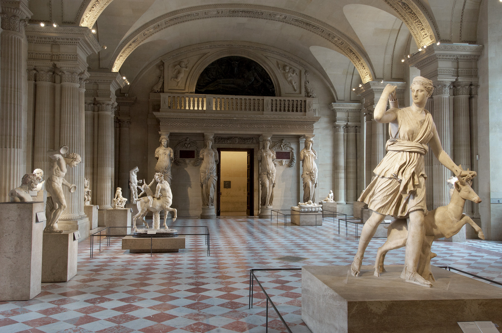
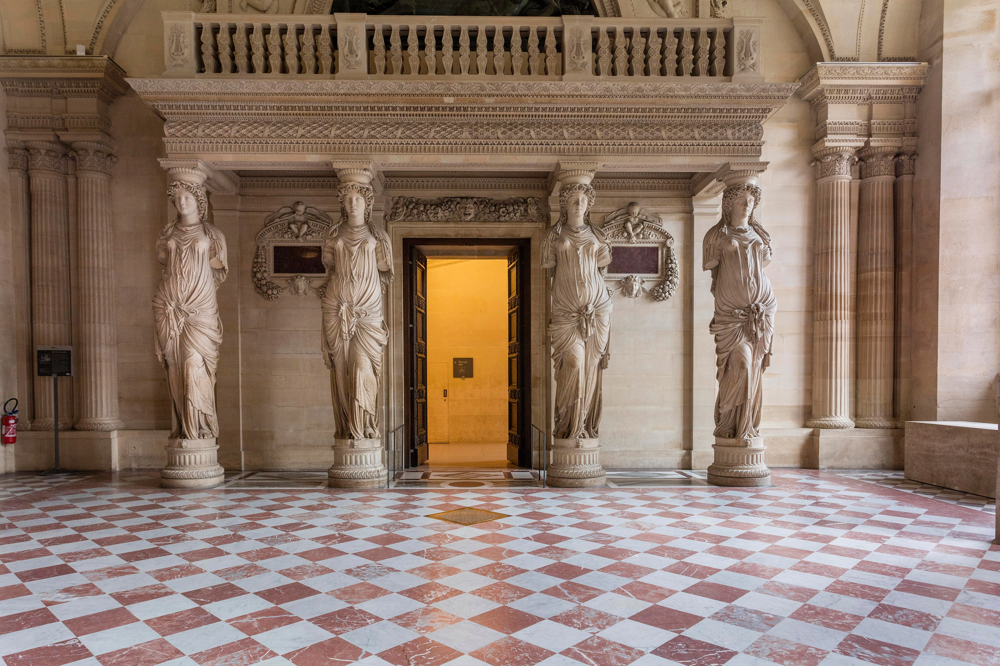
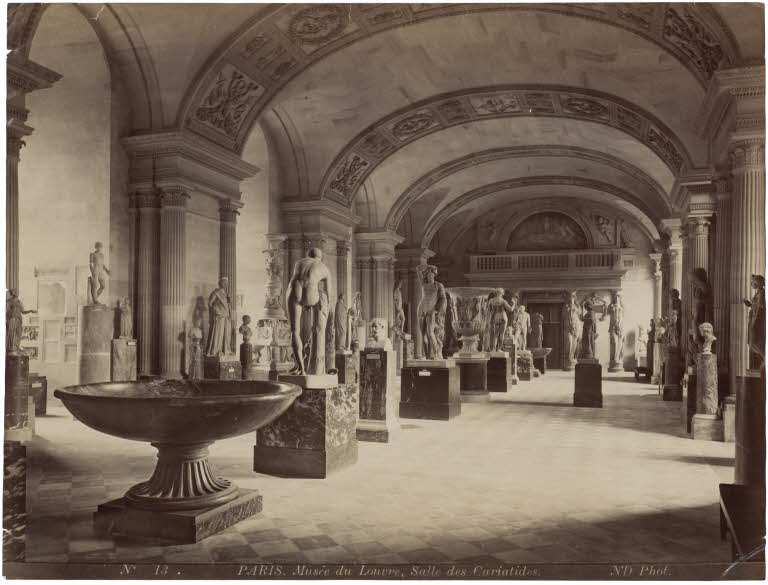
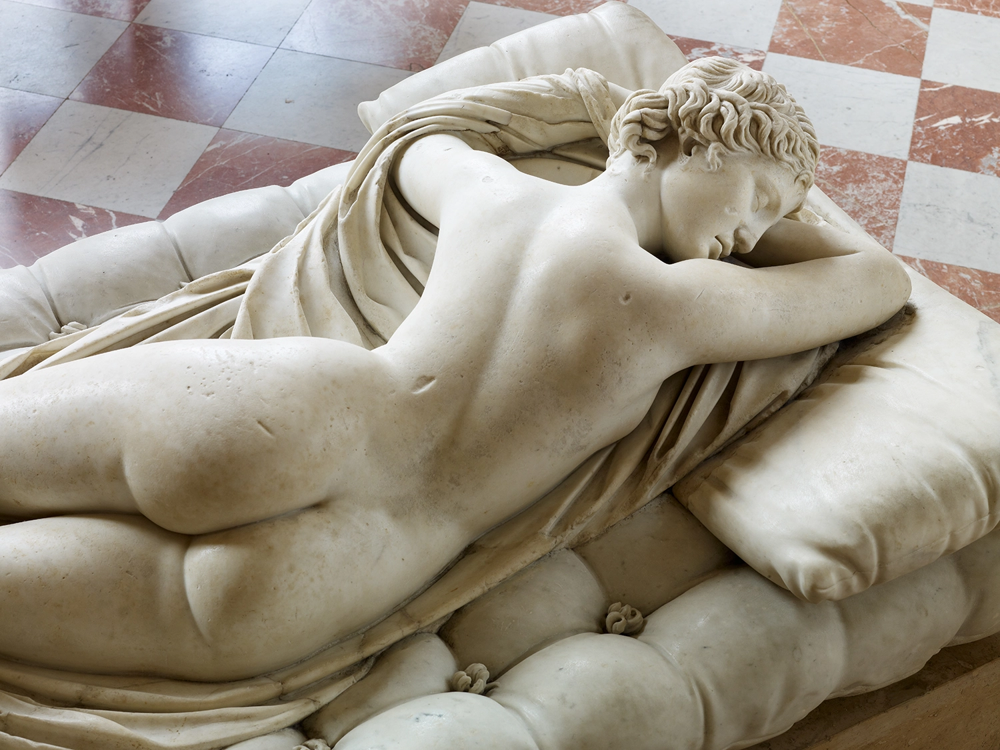
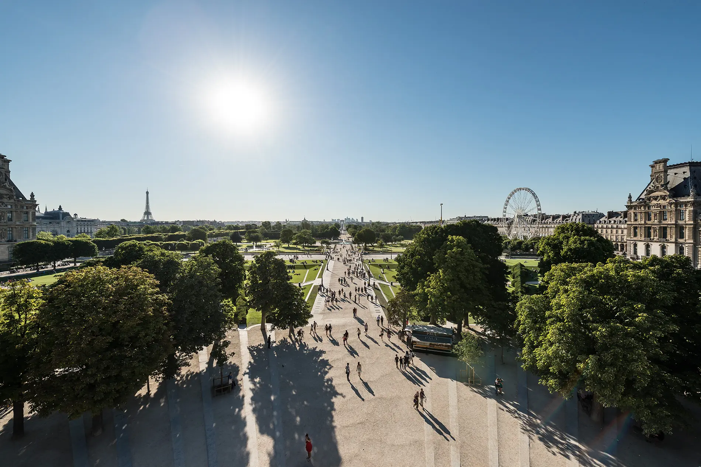
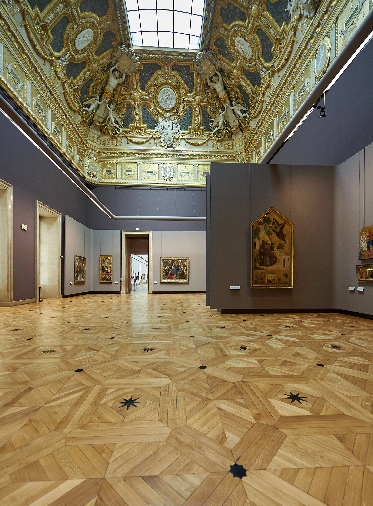

At the Heart of the Renaissance PalaceThe Salle des Caryatides

This room is one of the most impressive reminders of the Renaissance Louvre! Designed as a royal ballroom, this spacious vaulted gallery marked the arrival of Renaissance architecture in Paris… and since the 17th century, it has displayed a prestigious collection of ancient sculptures.
Transforming the Louvre
In 1528, King François I decided to demolish the Louvre’s medieval keep. Goodbye to the original austere fortress! Since the start of his reign thirteen years earlier, the king had been keen to introduce the spirit of the Italian Renaissance to France. He had already invited Leonardo da Vinci to his court, and other Italian artists, such as Rosso Fiorentino and Francesco Primaticcio, would later work on his châteaux under construction outside Paris and on the banks of the Loire.
François I chose the Louvre as his main residence in Paris, but construction work was necessary if the old fortress was to acquire the splendour and luxury of the Italian palaces the king had visited and admired. In 1546, he appointed the architect Pierre Lescot to oversee this monumental project. However, François died the following year and it was left to his son, King Henri II, to see the work through.
The caryatids
The huge reception room known as the Salle des Caryatides was therefore completed during the reign of Henri II. The name of the room derives from the four ‘caryatids’ – sculpted female figures serving as columns – that support the musicians’ gallery. These were made by the sculptor Jean Goujon in 1550. True to the spirit of the Renaissance, his work was inspired by a classical model – in this case, the Forum of Augustus, built by the emperor in Rome in the 1st century BC.

A ceremonial room
The musicians’ gallery is a reminder of the days when the Salle des Caryatides was used as a ballroom. However, the room also served many other purposes and was the scene of important historical events, such as the funeral ceremony held after the assassination of Henri IV in 1610. And it was here that Molière first performed in front of Louis XIV, in the play Le Dépit amoureux and later in L’Étourdi and Les Précieuses ridicules.
From ballroom to museum
Sculptures from Louis XIV’s collection began to be exhibited here in 1692 and the room became known as the ‘Salle des Antiques’. In 1806, Napoleon I had it connected to the nearby rooms that had been converted into a gallery of antiquities by the architects Charles Percier and Pierre Fontaine (see Venus de Milo room and Anne of Austria’s Apartments). The latter also oversaw the completion of the decoration of the Salle des Caryatides: the arches of the vaulted ceiling were carved and the fireplace was reconstructed around two allegorical sculptures by Jean Goujon.
Greek masterpieces and Roman copies
Today, the Salle des Caryatides houses masterpieces from the collection of Greek sculptures – particularly statues of gods, goddesses and mythological heroes.
Some of the works presented here are actually Roman marble copies of Greek bronze originals, as very few large Greek bronzes have survived.
This is the case with the graceful Artemis with a Doe, in the middle of the room. This marble sculpture from the 2nd century BC was based on a bronze original made in about 330 BC. It is also known as the Diana of Versailles, as it used to adorn the Hall of Mirrors at the Château de Versailles.
The Salle des Caryatides

To sum up...!
The collections of Greek and Roman antiquities were installed in the Louvre little by little. The process began in 1692, when Louis XIV moved part of his collection into the Salle des Caryatides. Further antiquities, confiscated by Napoleon’s troops during his Italian campaigns, arrived from 1798 onwards. This led to the creation of the Galerie des Antiques in the former summer apartments of Anne of Austria. In 1807, Napoleon I bought the collection of his brother-in-law, Prince Camille Borghese, and the Galerie des Antiques was expanded to include the nearby rooms that now house the Venus de Milo, among other masterpieces.

Gods and Heros of Ancient Greece: Apollo, Artemis, Dionysos…
Did you know?
Sleeping Hermaphrodite
Hermaphroditos was the son of Aphrodite, the goddess of love, and Hermes, the messenger god. When he was a young man, the nymph Salmakis fell in love with him, but he rejected her advances; disappointed, she asked Zeus to join their bodies into one. The sculptor intended this statue of the sleeping hermaphrodite to be perceived as female at first, reserving the surprise of the figure’s dual nature for when viewer walks round to see the other side.

Apollo Sauroktonus (‘Lizard-Slayer’)
Departing from the traditional image of Apollo as a majestic and powerful god, the great Greek sculptor Praxiteles portrayed him very differently – as a slender youth on the point of catching a lizard. This action can be seen to symbolise Apollo’s power over evil and illness.

More to explore

A garden at the heart of the Louvre
The Carrousel Garden

The Salon Carré
The original Salon